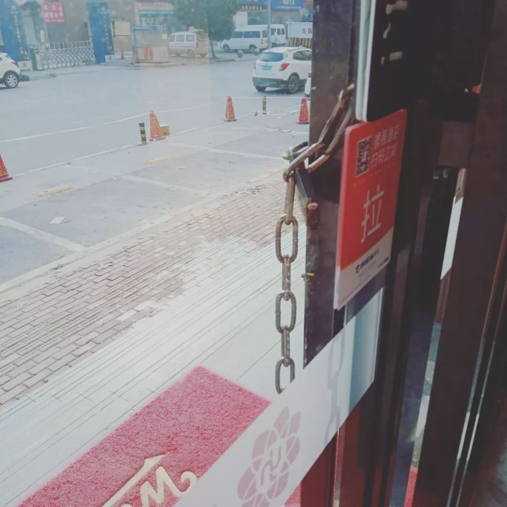
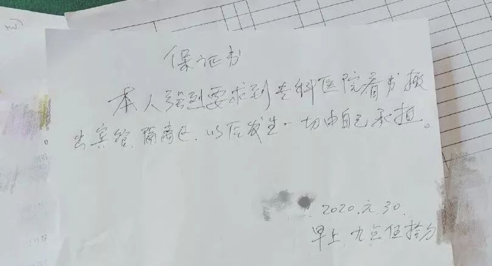
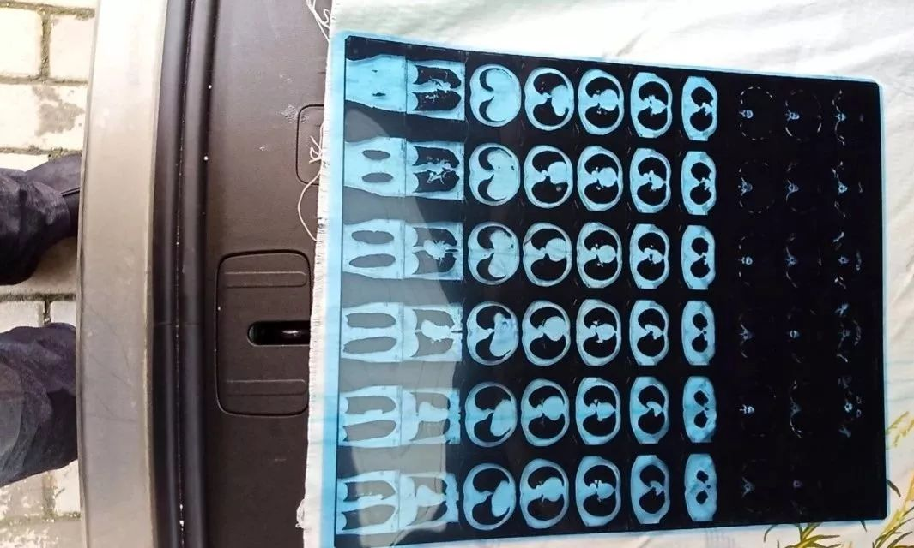
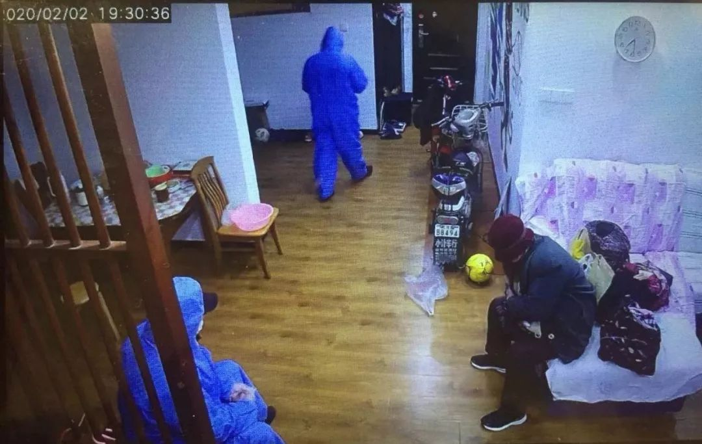
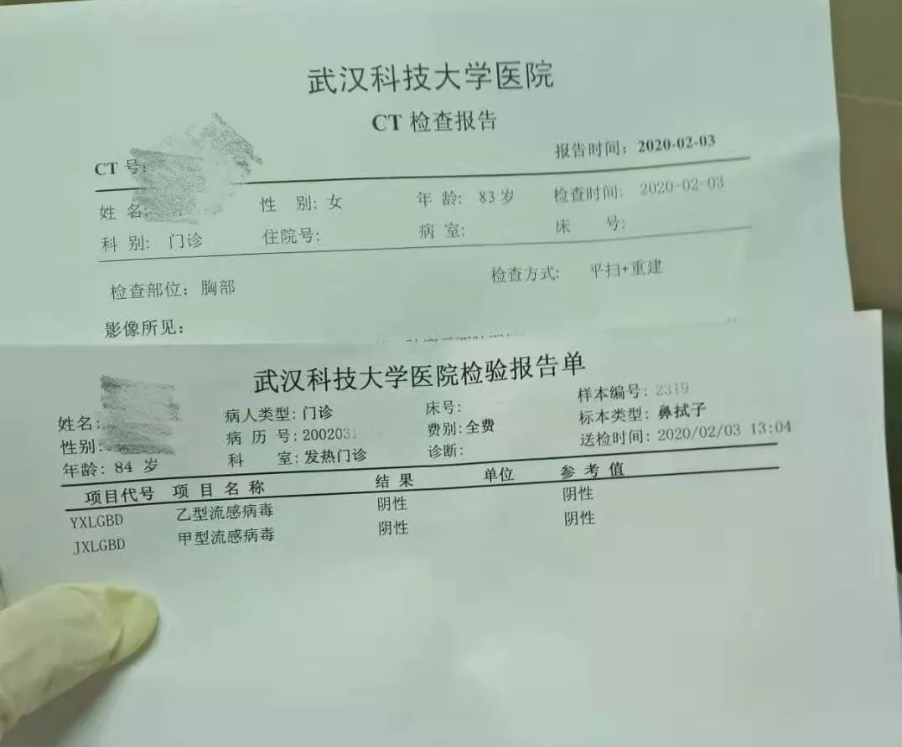

武汉兴建方舱医院、各大城市防控越发严格，以及 30 条疫情新闻
原文链接 备份链接 疫情发展 根据丁香医生实时数据，截至 2020 年 2 月 4 日 18 时，全国累计确诊病例 20520 例，疑似病例 23214 例。较昨日，新增确诊病例 3284 例，新增疑似病例 5027 例。其中， …

翁文的爸爸和奶奶，在武汉相继患上了新冠肺炎。在北京工作的翁文，每天只能通过监控，关注着他们的一举一动。几经折腾，爸爸终于入院，83岁的奶奶却依旧孤立无援。
文 | 吴美芬
翁文是一名在北京工作的武汉人，他远在武汉的爸爸61岁，奶奶83岁。爸爸和奶奶平日里相互照顾，最近相继患上了新冠病毒肺炎。
人无法回到武汉，翁文只能每天24小时通过监控，观察他们在家中的情况。随着翁文爸爸和奶奶病情的加重，他们在武汉的遭遇变得愈发艰难。
爸爸作为疑似病人被社区带走，强行在宾馆隔离了两天，因为缺乏医护条件，导致原有的肾病严重恶化，精神几度崩溃，幸好随后被确诊入院。
爸爸被带走后，83岁的奶奶一个人生活、一个人看病，举步维艰。
我和翁文在2月3日取得了联系，他远在北京，一直焦急地为爸爸和奶奶联系当地社区和医院安排救治。发生在他爸爸和奶奶身上的求医经历，是武汉老年新型肺炎患者群体遭遇的缩影。
这一群老年人，到底该由谁来负责？
以下是翁文的自述：
被社区集中隔离的父亲
1月23日，我爸爸开始发热，并伴随着咳嗽、流鼻涕、打喷嚏等症状。除了1月20日和22日，爸爸去市场买过菜之外，他再没出过门。
这两个市场在武汉比较偏远的地方，爸爸只在市场门口停留过，没有和其他人发生直接或者近距离的接触。
爸爸出现发热症状后，我有点慌。但考虑他没有呼吸障碍或者呼吸紧迫的症状，且很少出门，我以为是感冒或者甲、乙流感。所以最开始，我们选择进行居家隔离，并结合中草药和可乐必妥、奥司他韦等消炎药进行治疗。
直到1月29日，爸爸的病情都没见好转。
他每天都会发烧到38.6℃左右，1月29日体温高达38.9℃。每天都靠吃退烧药维持，头一晚上吃，第二天体温能够降到36℃左右。
可退烧药治标不治本，他的病情不断恶化。后来，消炎药和抗甲流感的特效药也没用了，爸爸的尿液逐步变少，腰酸背疼，精神萎靡不振。
之前几天，我在监控里还能看到他坐在客厅看电视。
到了1月29日，他的精神就很差了。腰特别酸疼，尤其是肾脏的部位。爸爸本来就有慢性肾炎，最怕的就是发烧，因为一旦发烧，肾炎可能会转移成尿毒症，到最后就是肾衰，那时就没法治了。
我们本来是不想给政府添乱的，不想去占用更多的医疗资源。所以刚有症状时，我们选择居家隔离和观察用药。
可是保守治疗了那么久，没有任何作用。
1月29日，爸爸高温38.9℃，去武汉科技大学发热门诊检查血液和肺部CT等，医生确诊是新冠病毒感染，让赶快找医院住院。
我和爸爸说，基本推断如医生所说，还必须要试剂盒才能确认，并上报给社区。
爸爸陆续辗转各个医院，想做核酸检测。他先后去了天佑医院、672医院、陆总医院、最后到了七医院，在七医院排队等了7、8个小时也没排上，饭也没吃。
19点34分，我得到社区通知，让爸爸回来准备去医院，把常用物品都带着，120马上到楼下。爸爸急匆匆赶回来，回到小区，没进家门。
他让奶奶准备了一些洗漱用品、几件厚衣服、吃饭碗筷以及治疗高血压的药，放在门外，他上去拿了就下楼。
21点22分，来了一辆中巴车。不是120的救护车，是私家车。那种大批发市场运菜的车子，很旧，很破，车内大部分座位已拆除，属非法改装。
爸爸上了所谓的120车，车子沿途还接了另外六个人。去的也不是医院，而是隔离点，新的隔离宾馆。


隔离点被锁住的大门
我晚上都要疯了。
爸爸在发烧，没有医生、没有护士、没有药、没有试剂盒、只有一盒泡面。隔离点的负责人拒绝接电话。
1月30日早晨，爸爸肾脏病情加重，精神崩溃，发来一条信息：“这里没有医护工作者，也没有药和体温计，什么都没有。过了一晚，现在病情日益加重，己经没有尿了，再不釆取自救，估计马上要死了。”
我打电话问了社区，才知道宾馆地点：武汉市洪山区青菱中路特一号驿海柏曼酒店。大门已被铁链子上锁。我的亲人想要曝光，但打各种电话，都打不通，占线。
13点27 分，爸爸急着要去医院，但隔离点负责人不让出去，要求爸爸写免责保证书。爸爸写了免责保证书后，隔离点也不放他出去。

爸爸写的保证书
下午，隔离点统一安排他们去了湖北省荣军医院做核酸检测。
18时，爸爸说，核酸已检查完，满城尽是救护车。
晚上，爸爸又回到了什么都没有的隔离宾馆，偶尔有人来测一下体温，或者发一下泡面，有时候也会发盒饭和退烧药。
隔天的下午，爸爸被告知，检测48小时以后才能出结果。这时爸爸发烧到了38.5℃以上。
另一边，在家里的奶奶开始有了乏力、腹泻、出汗、胸闷等疑似症状。我邀请所有的亲戚入家庭群，开始做最坏的准备。
2月1日下午6时，48小时已到，但检测依然未出结果，爸爸精神再次崩溃。
我再次感到快疯了。社区和政府承诺给我们的东西都没实现。我一直在想办法自救，什么途径都尝试过了，但还是没有找到。
2月2日中午，隔离点开始安排爸爸去672医院，并说隔离点直接对接医院，并不提供诊断单据。
爸爸总算住进了医院，有医生护士可以照顾他了。如果还在隔离宾馆，基本上连可以求助的人都没有，欲哭无泪，门给上锁，门卡不给他，家人也不可以去探视。就算给探视也去不了，因为武汉的交通被禁，大家哪也去不了。
我反复跟爸爸强调，要找到医生、护士或者政府方面的人拿到确诊报告。但直到现在也还没拿到。
不过，我确定他是确诊了，因为他就住在672医院，这家医院只收确诊的病人。

爸爸的CT结果
独自在家的奶奶发病
这些天，我们一直在监控奶奶的体温。
由社区安排物业帮忙测量，早晚各一次，他们人很好，还帮我观察奶奶的状况。2月2日下午，奶奶体温突然高达37.4℃，爸爸提出赶紧去医院，同时我和社区报告了此事。
本来社区是安排奶奶去确诊病人家属的隔离点的，但是奶奶已经烧到了38°，属于发热病人，因此达不到确诊病人家属隔离点的条件，只能去发热的疑似病人隔离点。但疑似病人隔离点的条件，是需要血液检查和肺部CT。
奶奶没有独立去医院检查的能力。无法取得检查结果，自然也去不了隔离点。
最近的亲属在20公里以外，没有隔离服，甚至没有优质的口罩。我们都希望有隔离服的社区，能派人送奶奶去。社区则希望我们有家属陪同，因为如果奶奶半路有任何事情发生，110、120、社区都担不起责任。
下午，爸爸想从672医院里出来，去带奶奶检查。护士医生把他拦了下来了，爸爸只好自我鼓励，“人生自古谁无死”。
19点32分，奶奶又发烧了，我想发微信给社区书记沟通怎么办，却发现在未告知情况下，被他删了微信。

社区书记删掉了我的微信
社会和国家呼吁我们求助社区，社区书记却把我的微信给删了，至今也没有一个说法。我觉得他舍弃了“人民”，舍弃了像我奶奶这样83岁的老人。
我开始给120、110、街道办事处打电话，他们均说政府让社区接管所有筛查工作，接送疑似病人也由社区负责。
（音频已作变声处理）
我们社区委员会有13个工作人，整个社区人数不到1万，目前确诊病人是5人。作为一线抗疫人员，他们的精神压力确实比较大。但如果我是社区书记，我绝对不会删掉一个有求于我的人的微信，更何况我本身就有责任，在他需要时去帮助他。

本来准备去隔离点的奶奶，打包好了行李
22点多，奶奶在38.2℃情况下未吃退烧药，坚持睡觉了。我心忐忑。
2月3日下午，多方沟通后，社区终于派人送奶奶去医院检查。
在医院里没有人陪，83岁的奶奶，一个人做检查。
经检查，医生确诊奶奶患上了新冠病毒肺炎，并告知要快速找医院住。奶奶没医院住，只能回家等社区再另行安排。

奶奶的确诊报告
我奶奶本来就有三级高血压、冠心病和胃食管反流等疾病，还是糖尿病的潜在患者。只有她住进医院，我的心才会放下。
我希望社区和政府，能够让我83岁、重病独居的奶奶，有机会去医院。尽管床位非常艰难，但是我也希望她能入院。
死生各安天命，我不会强求医院一定把她救活。我也不会去医闹，更不会去责怪医护工作者。我知道医务工作者的压力非常大。我本身就是一个医护工作者的家属，所以我能够理解。
我奶奶曾经是一个国营工厂的纺织工人，12岁开始在工厂工作。爷爷早年因为交通意外去世，她靠着自己的劳动支撑起整个家庭。
作为武汉人，我时刻想着能够为家乡人做一些事情。但现在爸爸刚住进医院，奶奶独自在医院做检查，我无心做别的事情。
政府是有责任救助她的，这是一个公共卫生事件。国家是有责任，救助这些人的。
我奶奶从来都不怕死。这几年她一直念叨着，去世后要把遗体捐给医务工作者和医学院的学生。虽然家里其他人不同意，我一直都是很支持的。
可是，如果这次我奶奶患的新型冠状病毒肺炎没有治好，我连骨灰都见不到，还怎么把遗体捐献给医务工作者呢？
「云林街十七号」
推出征集活动
无论你是医护人员、患者，还是普通人
都可以点击“阅读原文”
和我们联系


最近，
我们收到了很多人爱心人士发来的视频，
还有人想要加入我们的志愿团队。
真的谢谢大家的关注和支持！
借一位受访者的话很送给大家：
“樱花还会再开”。
报名参与“故事征集”。
文章已于修改
原文链接 备份链接 疫情发展 根据丁香医生实时数据，截至 2020 年 2 月 4 日 18 时，全国累计确诊病例 20520 例，疑似病例 23214 例。较昨日，新增确诊病例 3284 例，新增疑似病例 5027 例。其中， …
原文链接 备份链接 杨晨还在等通知。他在等待“十号令”带给他以及他的家庭命运的转机，他是一位“武汉病人”的家属。 让他有所期许的“十号令”，是2月2日发出的。按照“十号令”的要求，自通告发布之日起，对全市经发热门诊诊断有肺炎症状的发热病人 …
原文链接 备份链接 文/杜圆圆 编辑/单一 根据预测，新冠肺炎或将在一周后，迎来新的爆发期。从去年12月初被发现，到目前为止，疫情已经持续了两个月的时间。 从始至终，医护人员一直是最前线的逆行者。武汉这座刚崛起的新一线城市，成了全中国最惨 …
原文链接 备份链接 【财新网】（记者 黄蕙昭 综合）疫情局势仍然严峻。截至2日16时，中国累计确诊病例14489例，死亡304例，疑似病例19544例。湖北地区继续保持高增速：目前，湖北省确诊病例9074例，其中黄冈市累计确诊1002 …
原文链接 备份链接 凤凰新闻客户端 凤凰网在人间工作室出品 对于刚刚年满十八岁的少年小雨来说，2020年1月25日，大年初一晚上，是他生命中迄今最漫长的一夜。 武汉下着雨。第一人民医院发热门诊急救室外的走廊上，小雨和母亲相偎在没有温度的椅 …